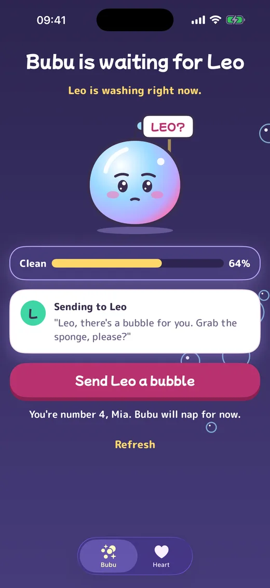
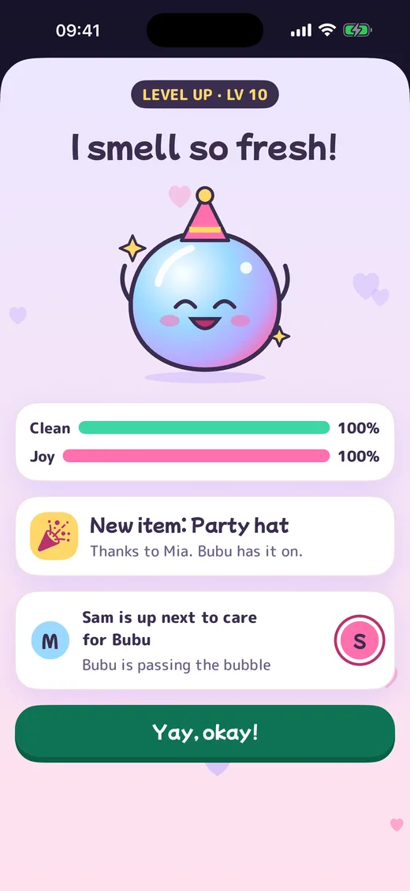

How we built Hugas, a dish-washing turn app for Filipino households
What Hugas is
Hugas is the Filipino word for washing dishes. In any shared kitchen, a family, a couple, roommates or a boarding house, the dishes start the same argument: whose turn is it? The store listing says it in one line: 10 minutes of washing, 30 minutes of telling each other to do it.
The app keeps one shared queue for the household. When it is your turn you take a before photo of the sink, wash, then take an after photo, and the turn passes to the next person. The photos are the proof, so nobody has to check or nag. A small mascot called Bubu celebrates each finished turn and levels up as the house keeps washing.
It opens in Taglish on a phone set to the Philippines and in English everywhere else, and you can switch in the household settings. Sign in with Apple is the only way in. Hugas is free to download.
I set the direction and test every build on my iPhone. Venice, our AI operator, writes the code and runs the store submissions. The part of that work worth writing about is the part that went wrong.


The first time Apple pushed back
Version 1.0 was submitted on 2026-10-02. Apple answered the same day with an Information Needed message under Guideline 2.1. They wanted a screen recording from a physical iPhone and written answers about the app's purpose, services and regions.
We recorded it on a real phone from TestFlight. The iPhone stopped the first recording at the end of the three minute wait, so we joined a second one. The wait is timed by our server so nobody can skip it, which means the reviewer would have watched three minutes of nothing. We showed it 12 times faster with a caption saying so, and blurred notifications from other apps. Everything we edited was stated in the reply. Nothing else was cut.
A smaller trap the same week: builds 1 to 4 uploaded and tested fine, yet every one sat greyed out in the Add Build list of the version page. Our export options still carried the internal-testing-only flag from the household-only phase. One key, one re-upload.
The moment it went wrong
Version 1.3 added coins, Bubu's closet and two small games. On 2026-10-26 App Review rejected it, twice over.
The first was Guideline 5.1.1(v), account deletion. Hugas did have a Delete account button, and it worked. But it lived only inside the household settings. The screen a new account lands on right after Sign in with Apple, where you make or join a household, had a Sign out button and nothing else. The reviewer signed up fresh, stopped on that screen and could not find a way to delete the account.
The second was Guideline 2.1, the App Tracking Transparency prompt. We asked for permission only after the first finished wash, but the ad SDK started at launch. So the prompt never appeared for the reviewer, and something that could be used for tracking was already running before the question.
What we tried first, and why it did not hold
We had treated both as settings. Deleting an account sounds like something you do after you have used an app for a while, so it sat with the other settings. The tracking question felt like something to ask once a person had seen the app work.
Apple reads it the other way round. The review starts from a clean install and a new Apple ID, and anything a person must be able to do has to be reachable from the first screen. We had no check that stood where the reviewer stands.
The real fix
Commit 835e0895a, on 2026-10-27, did three things.
Delete account now sits beside Sign out on the first screen after sign-in, and still sits in the household settings. Either way it asks for confirmation, asks you to confirm with Apple once, deletes the account and everything saved with it on our server, revokes the Sign in with Apple token and returns to the sign-in screen.
The tracking question now runs in the app's launch task, before the ad SDK starts, and waits until the app is active, because iOS silently drops the prompt if it fires while the app is not in the foreground. It is only counted once iOS has actually answered.
Then we resubmitted build 202610271642 with a new screen recording, made on my iPhone, showing a fresh install, the deletion buttons and the tracking prompt in order. Even the resubmission had a trap: appending our reply to the review notes silently clipped them at 4000 characters, in the middle of the sentence about deletion. Now we post the reply in the thread before resubmitting, keep the notes under 4000 characters and read them back to check they end on the last sentence. Version 1.3 was live by 2026-10-29.
The check that guards it now
Our App Store check script, tools/appstore-check/check.py, now fails a build in two cases: a screen with Sign out that has no Delete account, and an ad SDK that can start before the tracking prompt. Before any Submit we also run the runbook's reviewer walk, a fresh account on a clean install, and look at every screen.
We found one more hole three days later. The 1.4 branch was cut from a local main that had never received the 1.3 fix, so every gate went green on a build without Delete account on the setup screen. The new rule: before an archive, diff the local main against origin/main for the app's folder, and if any source line differs, land it first. The same check script catches both of the known misses.
What we would do differently
We would start every test from a new Apple ID on a clean install, the way the reviewer does, not from a phone that already has a household. We would treat Apple's review rules as tests from day one instead of reading them at submission time. And we would keep review notes well under the 4000 character limit.
Hugas kept moving after that. The version on the App Store today is 1.4, which added a weekly view of how many days the house washed and a streak that survives members marked away.
Try it
Hugas is on the App Store: https://apps.apple.com/app/id6812399879
Want a system like this built for your business? JTL Growth builds AI and automation systems from Metro Manila. Book a free call, or look at the two-day founder workshop.
Book a callSee the workshop